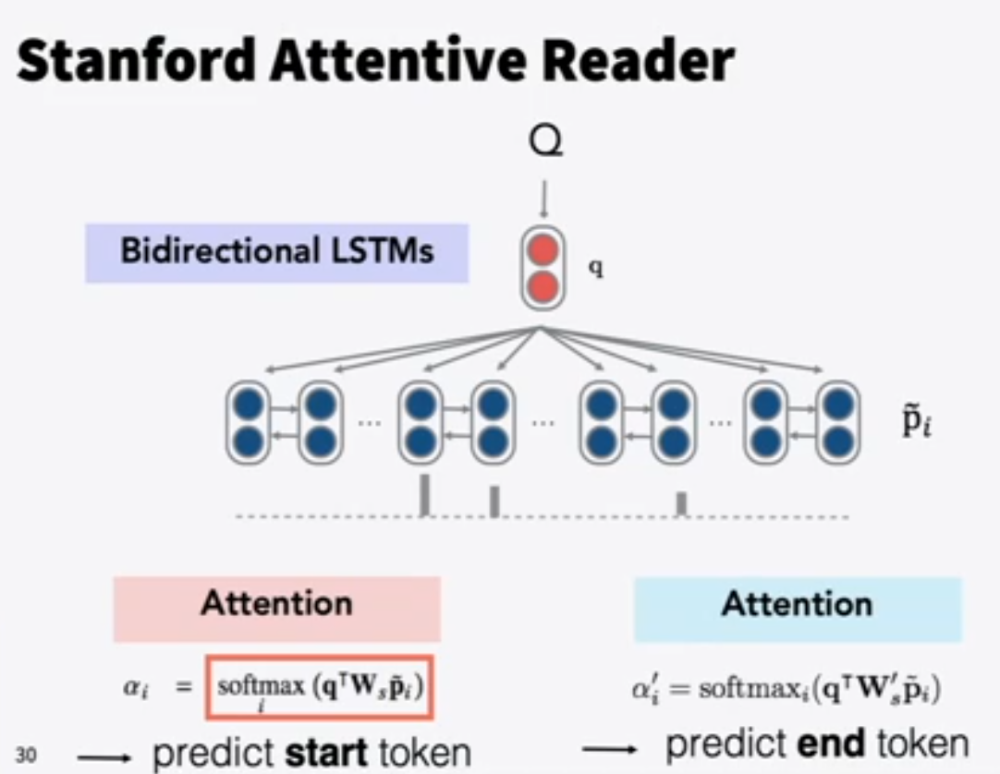
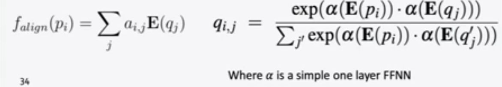
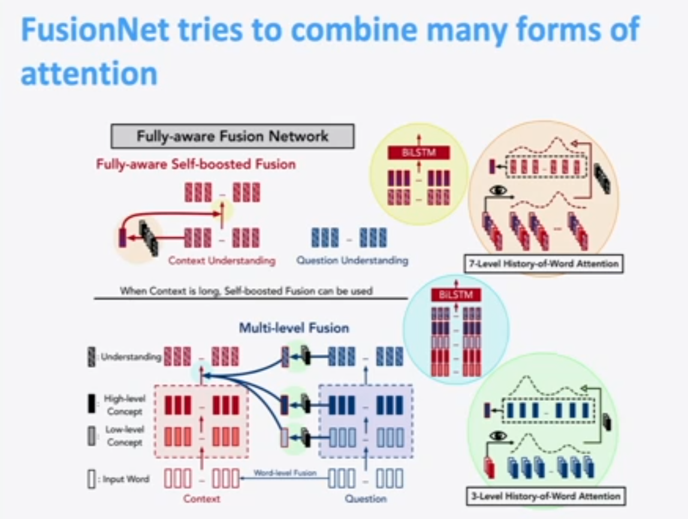

Question Answering
Question Answering systems typically have two parts
1. Finding documents that (might) contain an answer using standard information retrieval methods.
2. Performing Reading Comprehension on the text to isolate the answer.
Reading Comprehension
- A machine comprehends a passage of text if for any question regarding that text that can be answered correctly by a majority of native speakers, the machine can provide a string which those speakers would agree both answers that question and does not contain information irrevlevant to that question.
SQuAD
Question, Passage, and Answer. The answer is a subsequence of words in the passage (aka extractive QA).
Authors collected 3 gold answers.
Evaluation:
- Exact match to one of the 3 human answers
- F1: Take system and each gold answer as bag of words, compute precision=tp/(tp+fp), recall=tp/(tp+tn), harmonic mean f1 score=2PR/(P+R). Score is macro-average of per-qiestion F1 scores.
- Both metrics ignore ‘a’, ‘an’, ’the’, and punctuation. F1 is preferred over Exact.
SQuAD 1.0 always had an answer in the passage, SQuAD 2.0 have half of the questions have answers and half of them don’t have answers. No answer is a possible answer. A lot of systems can’t get the ’no answer’ right.
Limitations of SQuAD - All questions with an answer is a span in the passage. No counting questions, relational questions, implicit questions,
Barely any multi-fact/sentence inference beyond coreference.
Stanford Attentive Reader (Old Model, Danqi 2014)
The simplest Neural QA system that works pretty well.
They an an embedding of the question by taking word embeddings for each word in the question and running a bi-LSTM (two LSTMs, one forward, one backaward), and concatenate the final hidden states.
They embed each word the passage in the same way (concatenated bi-LSTM hidden states). Note that each word is embedded as the concatenaton of the hidden states of both of the LSTMs, reading from the start and the end of the passage respectively until that word. (instead of just appending the last hidden staes)
They use the question embedding and obtain an attention distribution by comparing the question embedding and each word’s bi-LSTM embedding using (multiplicative) attention.
Actually two attention distrbutions are generated with the same equation below but different weights. As it turns out one is trained to recognize the start of the answer span, and another attention distribution trained to recognize the end of the answer span.
(If the relevant info is in the middle of the span, the bi-LSTM will push it out to the start and end of the span).

Danqi (model’s author, stanford phd student) added some things to make the model better:
Stanford attentive reader ++
1. Instead of just concatenating the end states of the bi-LSTM for the question embedding, use attention to compute a weighted average of the hidden states for all the words to form the question embedding. The attention is dot-product attention computed with respect to a sentinel, or random vector.
So the dot product of every word’s bi-LSTM embedding is taken with respect to a random vector and a softmax is applied to get an attention distribution, which is then used as a weighted sum to add up the vectors to compute the question embedding.
2. She used a 3-layer bi-LSTM
3. For the passage representation, instead of only using GloVe word embeddings, she also concatenated one-hot encoded POS and NER tags, term frequency (unigram probability), exact match (whether the word appears in the question, with three cases: exact, uncased, lemma), and aligned question embedding (‘car’ vs ‘vehicle’) with the alignment computed as below:
E(pi),E(qj) below is the embedding of a single word in the passage and question, respectively. Each of these is run through a single layer NN and you're softmaxing it to get a similarity score.

Neural models do better because they can do better semantic matching of word similarities or rephrasing of things tha tmean the smae but dont use the same words. (better ‘paraphrasing’)
BiDAF QA System
Another very popular old QA system that a lot of people have built off
The attention flow is their central innovation (BiDAF is BiDirectional Attention Flow).
Idea: Attention should flow both ways - from the context to the question and from the question to the context. You should have passage words that map through attention to question words and question words that map through attention to passage words, and if you do that in both directions, and then run another round of sequence models on top of that you’d be able to do a lot better matching than either one of them.
BiDAF has a deep (3-layer) bi-LSTM (using both character level adn word level embeddings) as its base layer. The attention flow layer is on top of that.
The Attention Flow Layer
The attention flow layer reparameterizes the context words taking into account the query. For every word, the reparameterization consists of the original context embedding, an embedding formed by weigted average of important query words (computed through C2Q attention), a 'hint' about the interactions of the above two embeddings, and an amplification of important context words (computed through Q2C attention).
For each pair of context embeddings ci and query embeddings qj, make similarity score using a learned weight vector wTsim as follows:
Sij=wTsim[ci;qj;ci∘qj]∈R
where
∘ is the Hadamard or elemnt-wise product.
(Note: wsim of dimension 6d, becuase we have ci and qj both of dimensions 2d, the concatenation of two hidden layer states for two LSTMs, and because ∘ is the elementwise product):
The Hadamard product is kind of 'cheating' for NN purists because you would hope that the product term between the passage and the question would be learned by the NN and you didn't have to give it to it, but in practice it helps a lot and is a 'hint' to the NN.
Use that similarity score to compute attention that goes in both directions:
Context-to-Question (C2Q) Attention:
(Which query words are most relevent to each context word)
For each context word, take the similarity scores over a softmax to generate an attention distribution over question words, and compute the attention encoding of each context word as the attention-weighted sum of the embeddings of each question word.
α(i)=softmax(Si:)∈RM∀i∈{1,...,N}
ai=∑j=1Mα(i)jqj∈R2h∀i∈{1,...,N}
Question-to-Context (Q2C) Attention:
(Weighted sum of the most important words in the context with respect to the query - slight asymmetry through max)
Slightly different from the C2Q direction.
Again start out with the smae similarity scores Sij, but this time, find which position in the question aligns the most with the context, so this time they are finding a max (the position in the question most aligned to the context). For each of the context words they are finding the most aligned question word, and then computing the β attention distribution as the softmax distribution over the scores of the most aligned question words.
The β distribution is used to form the new representation of the context passage by taking a weighted sum of the passage over β.
mi=β=c′=maxjSij∈R∀i∈{1,...,N}softmax(m)∈RN∑i=1Nβici∈R2h
Putting it All Together: Full Attention-Flow
For each context position, the ourput of the BiDAF layer is
bi=[ci;ai;ci∘ai;ci∘c′]∈R8h∀i∈{1,...,N}
where
ci is the original embedding of the context word from the bi_LSTM,
ai is the new embedding of the context word from the C2Q attention using which query words are most relevent to that context word, and
c′ is the weigted sum of the most important words in the context with respect to the query).
In the new parameterization, ci is the embedding of the context, ai is the embedding of the context taking into account the query, ci∘ai is a 'hint' to look at interaction terms, and ci∘c′ is an 'amplification' of the most important terms in the context. c′ does not appear by itself because all of its information is already captured in ci.
Final BiDAF Layers
After the attention flow layer, there is another deep (2-layer) bi-LSTM over the context using the attention flow output as the word embeddings (this is called the 'modelling layer'.
Finally, answer span selection is more complex:
- Start: Pass ourput of BiDAF and modelling layer concatenated together to a dense FF layer and then a softmax.
- End: Put output of modelling layer M through another bi-LSTM to give M2 (kind of a hack to make it deeper) and then concatenate with BiDAF layer and again put through dense FF layer and a softmax.
FusionNet
Recall Simplified Variants of Multiplictive Attention.
- Sij=cTiWqj is the original multiplicative attention.
- Sij=cTiUTVqj where U,V are low rank
- Sij=cTiWTDWqj where W is low rank and D is diag
- Sij=Relu(cTiWT)DRelu(Wqj) FusionNet Attention because of a heuristic 'non-linearities are very important in deep learning'.
Because building attention in the last way is much much cheaper (Space complexity is O((d1+d2)d3) where d3 is the dimensionality of the reduced dimension diagonal) they can use lots and lots of attention and they combined a lot of forms of attention to come up with the fusion network.

The FusionNet people made a point that a lot of the different models people have done in the last couple of years have been using and putting together different forms of attention. They try all of them. There is a catalog of different for all the ways attention has been used.